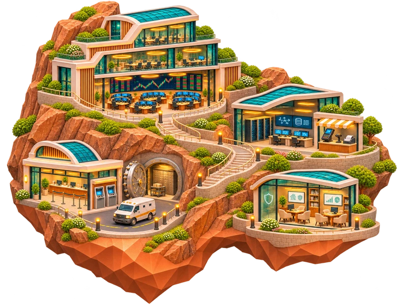
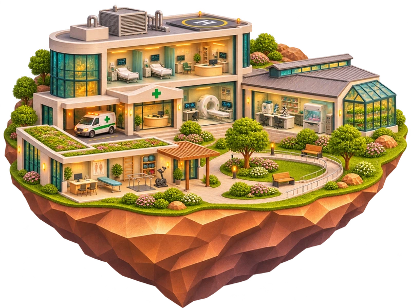
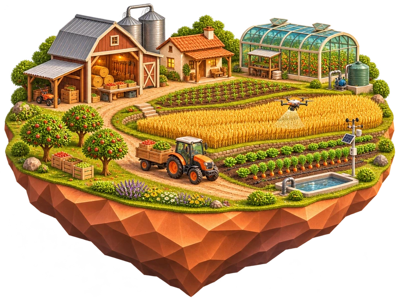

Expanded possibilities
We reveal industries, roles, and pathways you may never have considered — but where your skills are a powerful transferable match. Expand your horizon of what's possible.
An intelligent platform that helps you explore changing industries and roles, see where your skills transfer, follow pathways built on your experience, and activate your network to find opportunities far beyond the traditional job search.
Because careers aren't just job listings — they're worlds to explore.



Four connected tools that move you from overwhelmed to in-control — built around your experience, not generic advice.
We reveal industries, roles, and pathways you may never have considered — but where your skills are a powerful transferable match. Expand your horizon of what's possible.
Explore industries through labour-market insights, growth signals, regional demand, role pathways, and company ecosystems. Understand where work is moving — not just where it is today.
Your profile, pathways, saved industries, learning journey, and next steps live in one place — giving you a clear, evolving picture of where you're headed.
Your opportunities already exist around you. We organize your LinkedIn network by roles, companies, and industries so you can navigate the hidden job market intentionally — not by accident.
The old playbook — pick a title, climb in a straight line — doesn't match how work moves now. WonderPath is built for exploration: see the whole terrain, understand where you transfer, and choose your next move with intention.

Move from uncertainty → exploration → action, one step at a time.
Upload your résumé and tell us what matters to you. We learn your experience, transferable skills, goals, energy, the industries that interest you, and what meaningful work actually looks like for you — so everything after this is personal.
Discover industries through interactive labour-market intelligence — and learn what each sector actually does, who's hiring, and where it's headed next.
We reveal role pathways built on your experience, transferable skills, career goals, and industry interests — including promising paths you may never have considered on your own.
See exactly what a role needs, the strengths you already bring, and what's missing — then get matched to courses and learning pathways that help you close the distance and move with confidence.
We organize your LinkedIn network into clear opportunities — people, industries, companies, and paths — so you can navigate the hidden job market intentionally and reach the right person at the right time.
The traditional job search was built for a more stable world. Today industries evolve quickly, new roles emerge constantly, and career paths are far less linear than before. People aren't lacking effort — they're navigating an entire landscape without a map. They need better guidance, education, and navigation, not more job boards.
People aren't just looking for jobs anymore — they're trying to understand an entire landscape of industries, roles, and constantly changing opportunities, often with no clear place to start.
AI, automation, and economic shifts are creating new pathways faster than traditional career guidance can keep up. People need new ways to see where work is moving — and how they fit into it.
Most people search within roles and industries they already know. But their transferable skills could unlock entirely different sectors, emerging fields, and opportunities they haven't discovered yet.
Many opportunities happen through conversations, referrals, and communities — not applications alone. Yet most people don't know how to activate their network, reach the right people, or navigate those spaces intentionally.
“People don't just lose opportunities. They lose confidence. The modern career search became survival instead of exploration.”
Today's world changes faster than traditional career advice. AI, automation, industry shifts, and economic uncertainty are reshaping work — but most people still navigate careers with static job boards and generic advice. People deserve better.
“A career isn't just a job. It's identity, meaning, possibility, and future.”
We're building this so people can move through change with curiosity, confidence, and intention — and search with the belief that something better is genuinely within reach.
Helping people understand the landscape, discover where they fit, and move forward intentionally — with curiosity instead of fear.
Join early access, get a first look, and help shape a new way of exploring careers.
You're not behind. You may just need better visibility into what's possible.